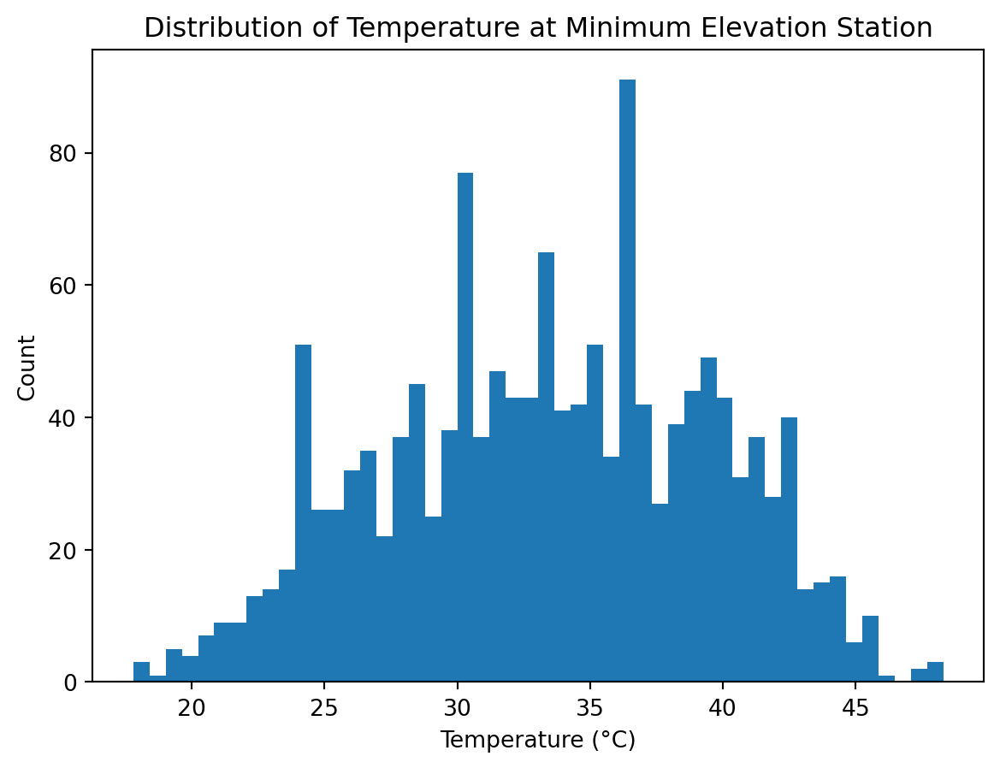
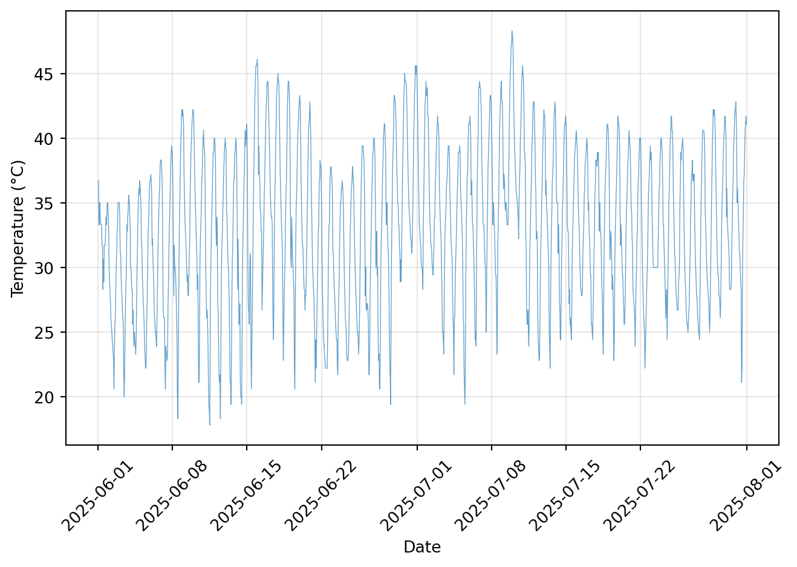
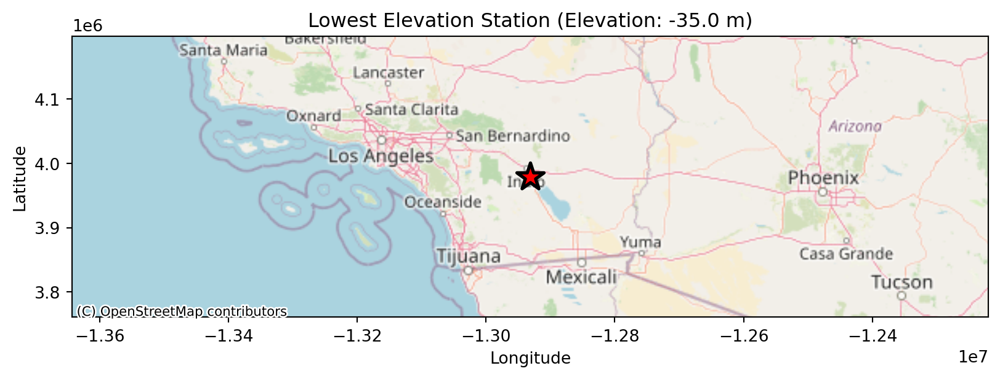

import pandas as pd
pd.set_option("display.float_format", "{:.2f}".format)
import numpy as np
import matplotlib.pyplot as plt
import geopandas as gpd
import contextily as cx
from IPython.display import displayLab 03 - EDA and Viz 1
JSC370 (Winter 2026)
Learning Goals
- Download lab 3 here
- Read in from github and get familiar with a meteorology dataset
- Plan out how to tackle the objective question
- Step through the EDA “checklist” presented in the class slides
- Make exploratory graphs and maps
Deliverables
- Complete the code and summaries and upload your .qmd and rendered .html to Quercus
Lab Description
We will work with similar meteorological data that was presented in lecture. Recall the dataset consists of weather station readings in the contiguous US.
The objective of the lab is to find the weather station with the lowest elevation, find out where this location is (make a map), and make a time series plot of temperature at this station.
Steps
0. Load libraries
Notes:
- import the necessary libraries
- note setting pandas options for nicer display of the output
- in the yaml above set enabled to true when you want the code to render
1. Read in the data
Connect to github and read in data with pandas.
url = "https://raw.githubusercontent.com/JSC370/JSC370-2026/main/data/met_all_2025.gz"
met = pd.read_csv(url, compression="gzip") 2. Check the memory size, dataset dimensions, and the header. How many columns, rows are there?
- fill in where there are …
met.memory_usage(deep=True).sum() / 1024**32.69841643050313met.shape[0], met.shape[1](5381580, 30)display(met.head())| USAFID | WBAN | year | month | day | hour | min | lat | lon | elev | ... | vis_dist_qc | vis_var | vis_var_qc | temp | temp_qc | dew_point | dew_point_qc | atm_press | atm_press_qc | rh | |
|---|---|---|---|---|---|---|---|---|---|---|---|---|---|---|---|---|---|---|---|---|---|
| 0 | 690150 | 93121 | 2025 | 6 | 1 | 0 | 26 | 34.30 | -116.16 | 625 | ... | 1 | 9 | 9 | 37.20 | 1 | 4.40 | 1 | NaN | 9 | 12.95 |
| 1 | 690150 | 93121 | 2025 | 6 | 1 | 0 | 54 | 34.30 | -116.16 | 625 | ... | 1 | 9 | 9 | 36.70 | 1 | 4.40 | 1 | 1008.40 | 1 | 13.32 |
| 2 | 690150 | 93121 | 2025 | 6 | 1 | 1 | 54 | 34.30 | -116.16 | 625 | ... | 1 | 9 | 9 | 34.40 | 1 | 4.40 | 1 | 1008.40 | 1 | 15.19 |
| 3 | 690150 | 93121 | 2025 | 6 | 1 | 2 | 54 | 34.30 | -116.16 | 625 | ... | 1 | 9 | 9 | 32.20 | 1 | 5.60 | 1 | 1008.90 | 1 | 18.77 |
| 4 | 690150 | 93121 | 2025 | 6 | 1 | 3 | 54 | 34.30 | -116.16 | 625 | ... | 1 | 9 | 9 | 31.10 | 1 | 5.60 | 1 | 1009.10 | 1 | 20.02 |
5 rows × 30 columns
Summary: - The memory usage is approximately 2.7 GB, which falls under the large category where we need careful handling of dtypes and columns. - The shape is (5381580, 30) which corresponds to the row and column counts respectively. - The head is truncated due to a large number of columns. We can see that there are multiple rows/observations per day and per location. Each station at a location monitors things like temperature and elevation at various times of the day.
3. Look at data types of the variables in the dataset.
met.info
met.dtypesUSAFID int64
WBAN int64
year int64
month int64
day int64
hour int64
min int64
lat float64
lon float64
elev int64
wind_dir float64
wind_dir_qc int64
wind_type_code object
wind_sp float64
wind_sp_qc int64
ceiling_ht float64
ceiling_ht_qc int64
ceiling_ht_method object
sky_cond object
vis_dist float64
vis_dist_qc int64
vis_var object
vis_var_qc int64
temp float64
temp_qc object
dew_point float64
dew_point_qc object
atm_press float64
atm_press_qc int64
rh float64
dtype: objectSummary: - Most variables are numerical (int64 and float64). The year, month, day, hour, minute are integers. The latitude and longitude are floats. - The rest of the variables are characteristics about the location at a particular time, such as recorded temperature. Some of the characteristics are objects.
4. Take a closer look at the key variables (temp and elev).
- Are there missing data in these variables? If so, make sure they are coded correctly.
key_vars = ['temp', 'elev']
met[key_vars].isnull().sum()temp 0
elev 0
dtype: int64- Are there any unusual values that look suspicious?
minT = met['temp'].min()
maxT = met['temp'].max()
minE = met['elev'].min()
maxE = met['elev'].max()
print(minT, maxT, minE, maxE)-40.0 999.9 -35 3680Summary: - There are no missing data in these two columns. - The min temperature is -40 degrees celsius, and the max temperature is 999.9 which seem suspicious. - The elevation’s range is between -35 and 3680, and we need domain knowledge to verify if that is plausible.
5. Check the data against an external data source and make any other adjustments.
Check that the range of elevations make sense. Google or ChatGPT is your friend here.
Fix any problems that arise in your checks.
For elevation, the highest recorded elevation in the US was above 4000 meters, so 3680 is plausible. The lowest elevation in the US is 86 meters below sea level, so -35 is also okay.
met.loc[met['temp']==999.9] = np.nan
met[['temp']].describe().round(4)| temp | |
|---|---|
| count | 5196576.00 |
| mean | 23.71 |
| std | 6.05 |
| min | -40.00 |
| 25% | 20.00 |
| 50% | 24.00 |
| 75% | 28.00 |
| max | 56.00 |
Summary: - The unusual 999 may be the encoding for null temperature. - After restricting the data to exclude temperatures equal to 999 degrees Celsius, the mean temperature recorded is 23.71 degrees Celsius, with the min being -40 and the max being 56. These are reasonable values.
cold_temps = met[met['temp'] <= -20]
display(cold_temps[['USAFID','temp','lat','lon','year','month','day','hour']].drop_duplicates(subset=['USAFID']))
# display data here extract lat and lon and check google| USAFID | temp | lat | lon | year | month | day | hour | |
|---|---|---|---|---|---|---|---|---|
| 1015246 | 720742.00 | -24.00 | 28.21 | -100.02 | 2025.00 | 6.00 | 16.00 | 17.00 |
| 5353135 | 749048.00 | -40.00 | 29.84 | -82.05 | 2025.00 | 6.00 | 28.00 | 15.00 |
Summary: - There are 8 rows where the temperature is less than or equal to -20 degrees Celsius. The distinct locations are (28.21, -100.02) and (29.84, -82.05). - Checking on Google, (28.21, -100.02) is in Texas and close to Mexico, so it is very unlikely that it will have a recorded temperature of -40 degrees Celsius in June. - (29.84, -82.05) is in Florida and also in the far South of the US. So the temperature also seems off.
# Fix up data here, remove implausible values
met = met.loc[met["temp"] > -20].copy()
met['temp'].min()-6.06. Answer research questions
Remember to keep the initial questions in mind. We want to pick out the weather station with minimum elevation and examine its temperature.
Some ideas for steps: 1. subset the data for the weather station with minimum elevation 2. look at histograms of temperature 3. make a time series plot (need to create date variable) 4. make a map to see where it is
6a. Subset minimum elevation site
# Subset data for the weather station with minimum elevation
min_elev_station = met[met['elev'] == met['elev'].min()]
display(min_elev_station.head())| USAFID | WBAN | year | month | day | hour | min | lat | lon | elev | ... | vis_dist_qc | vis_var | vis_var_qc | temp | temp_qc | dew_point | dew_point_qc | atm_press | atm_press_qc | rh | |
|---|---|---|---|---|---|---|---|---|---|---|---|---|---|---|---|---|---|---|---|---|---|
| 5254217 | 747187.00 | 3104.00 | 2025.00 | 6.00 | 1.00 | 0.00 | 52.00 | 33.63 | -116.16 | -35.00 | ... | 5.00 | N | 5.00 | 36.70 | 5 | 6.70 | 5 | 1007.20 | 5.00 | 15.66 |
| 5254218 | 747187.00 | 3104.00 | 2025.00 | 6.00 | 1.00 | 1.00 | 52.00 | 33.63 | -116.16 | -35.00 | ... | 5.00 | N | 5.00 | 36.70 | 5 | 7.20 | 5 | 1007.30 | 5.00 | 16.21 |
| 5254219 | 747187.00 | 3104.00 | 2025.00 | 6.00 | 1.00 | 2.00 | 52.00 | 33.63 | -116.16 | -35.00 | ... | 5.00 | N | 5.00 | 33.30 | 5 | 13.90 | 5 | 1007.40 | 5.00 | 30.87 |
| 5254220 | 747187.00 | 3104.00 | 2025.00 | 6.00 | 1.00 | 3.00 | 52.00 | 33.63 | -116.16 | -35.00 | ... | 5.00 | N | 5.00 | 33.30 | 5 | 11.70 | 5 | 1007.00 | 5.00 | 26.70 |
| 5254221 | 747187.00 | 3104.00 | 2025.00 | 6.00 | 1.00 | 4.00 | 52.00 | 33.63 | -116.16 | -35.00 | ... | 5.00 | N | 5.00 | 35.00 | 5 | 6.10 | 5 | 1007.30 | 5.00 | 16.54 |
5 rows × 30 columns
6b. Histogram of temperature at minimum elevation site
plt.hist(min_elev_station['temp'].dropna(), bins=50)
plt.xlabel('Temperature (°C)')
plt.ylabel('Count')
plt.title('Distribution of Temperature at Minimum Elevation Station')
plt.show()
- The mean and median temperatures are approximately 32-33 degrees Celsius, which is warm and makes sense for June in the US.
6c. Create date variable and time series plot
Look at the time series of temperature at this location. For this we will need to create a date-time variable for the x-axis.
Summarize any trends that you see in these time series plots.
# Create a date variable for min_elev_station
min_elev_station = min_elev_station.copy()
min_elev_station['date'] = pd.to_datetime(
min_elev_station[['year','month','day','hour']]
)
# Sort by date
min_elev_station = min_elev_station.sort_values('date')
# Create line plot of temperature by date
plt.plot(min_elev_station['date'], min_elev_station['temp'], linewidth=0.5, alpha=0.7)
plt.xlabel('Date')
plt.ylabel('Temperature (°C)')
plt.grid(True, alpha=0.3)
plt.xticks(rotation=45)
plt.tight_layout()
plt.show()
Summarize time series plot: - The range of temperature over the two months is approximately 20 to 45. - The highest temperature is achieved in early July. - The temperatures go up and down as time goes, but there is no obvious trend (there is a very slight upward trend from June to August).
6d. Where is the lowest weather station?
station_location = min_elev_station[['lat','lon','elev']].drop_duplicates()
lat = station_location['lat'].iloc[0]
lon = station_location['lon'].iloc[0]
elev = station_location['elev'].iloc[0]
# make elev into GeoDataFrame for mapping
gdf = gpd.GeoDataFrame(
{'elevation': [elev]},
geometry=gpd.points_from_xy([lon], [lat]),
crs='EPSG:4326'
)
# Convert to Web Mercator for basemap
gdf = gdf.to_crs('EPSG:3857')
# map
fig, ax = plt.subplots(figsize=(10, 8))
gdf.plot(ax=ax, color='red', markersize=300, marker='*', edgecolor='black', linewidth=2, zorder=5)
cx.add_basemap(ax, source=cx.providers.OpenStreetMap.Mapnik)
ax.set_xlabel('Longitude')
ax.set_ylabel('Latitude')
ax.set_title(f'Lowest Elevation Station (Elevation: {elev} m)')
plt.show()
Summarize where the lowest elevation station is located. - The lowest elevation station is located near Indio, which is a city in California in the Coachella Valley (from Wikipedia).